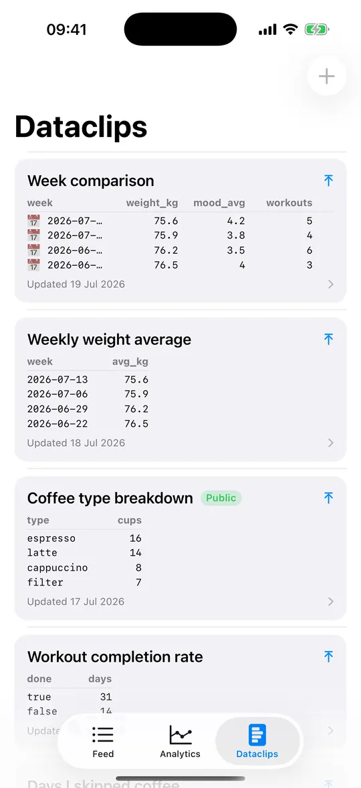
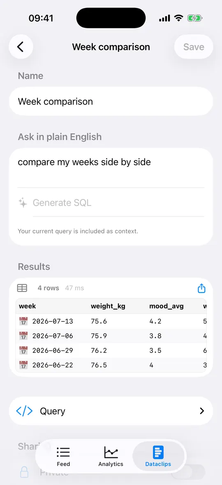
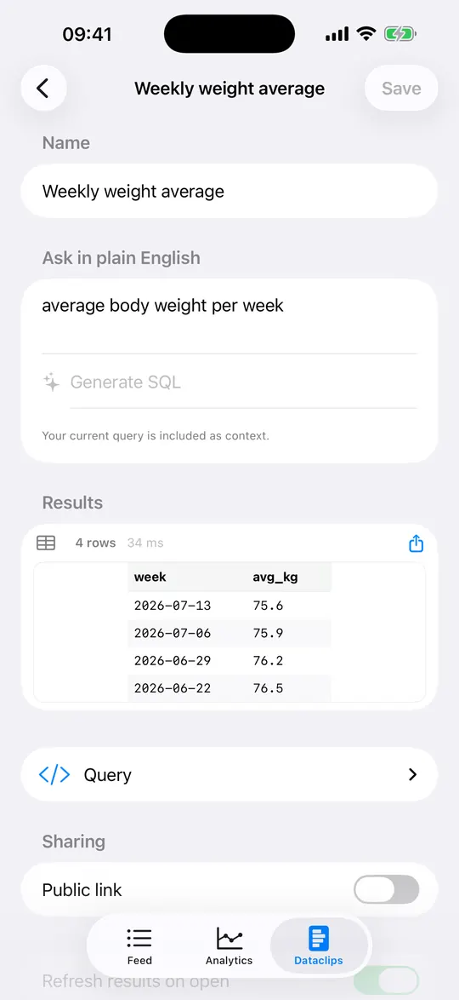

Variables: a personal data platform you can program
A mobile-first spreadsheet for the things you track. You define the columns. You write the formulas. Your agent has an API. Any result can become a web page.
Johannes Klumpe · Technical note · Revised November 2026 · How long I have used it: live dataclip
Abstract. Habit trackers decide what you can track and what counts as success. Spreadsheets decide nothing, but they are slow on a phone and hard to reach by voice or from an AI agent. Variables sits between the two. You define typed variables and log a value in seconds: by tap, by voice, from the wrist or through an API. Everything else (streaks, weekly goals, training plans, reports) is a saved SQL query, called a dataclip. A public dataclip is also a JSON endpoint, so a progress website is one static file and one fetch. This page makes six claims and shows the evidence for each.
Get the iOS app Open the web app
- Runs on
- iPhone, Apple Watch, Garmin watches, any browser
- Input
- Tap, voice, HTTP API
- Analysis
- SQL (DuckDB) or a question in plain English
- Sharing
- Public page and JSON URL per dataclip
- Price
- Free. No ads, no tracking scripts.
1 PremiseA tracker has three parts, and most tools fix two of them
Every tracker has a schema (what you can record), an input path (how a value gets in) and a computation (what the tool derives from the values). Table 1 shows which parts each kind of tool lets you change.
| Habit app | Spreadsheet | Variables | |
|---|---|---|---|
| Schema | Fixed: yes/no, count | Free | Free and typed |
| Input on a phone | Fast | Slow | Fast: taps, voice, watch |
| Computation | Fixed: streaks, charts | Free: formulas | Free: SQL or plain English |
| Agent access | Rare | Possible, heavy setup | One API key, six endpoints |
| Publish a result | Screenshot | Share the sheet | Public page and JSON URL |
Table 1. A typical habit app, a spreadsheet and Variables. The first two columns are generalisations. Single products differ.
If the schema and the computation are free and the input stays fast, the tracker fits the person. The person does not have to fit the tracker. Sections 2 to 7 show that Variables meets each condition.
2 Claim 1The schema is yours
A variable has a name, a type, an optional unit and a description. You create, rename and archive variables at any time. A catalog of examples helps you start, but no template and no category is required. Table 2 lists the types.
| Type | Example | Input control |
|---|---|---|
| Number | Body weight, 75.6 kg | Keypad, last value prefilled |
| Rating | Mood, 4 of 5 | Stars |
| Yes / No | Workout done | Toggle |
| Category | Coffee type: espresso | Your own options, most used first |
| Time | Bedtime, 22:53 | Time picker |
| Text | One line about the day | Keyboard or dictation |
| JSON | A meal with its macros | API only, optional schema (section 6) |
Table 2. Variable types. Every value also carries the day it belongs to, so you can log for a past day.
3 Claim 2A value takes seconds to log, on every surface
A tracker that is slow to feed dies in the second week. Variables has four input paths, and each is short.
- Phone. The feed lists every variable with its last value. Tap Log, tap Save. For a number or a rating the last value is prefilled, so a repeat value takes two taps.
- Voice. Say one sentence that contains several values. The app maps each part to a variable and shows the entries for review before it logs them.
- Watch. The Apple Watch app enters values with the Digital Crown and accepts voice too. The Garmin app does the same with the buttons: START opens a variable, UP and DOWN change the value, START saves.
- API. A script or an agent posts a value with one HTTP request (section 6).


4 Claim 3Everything derived is a query
Variables has no built-in idea of a streak, a goal or a report. It has dataclips. A dataclip is a saved SQL query over two tables:
variables (id, name, type, unit, archived)
vals (id, variable_id, data,
record_date, created_at)
The engine is DuckDB, so window functions, date arithmetic and JSON functions are available. If you do not write SQL, type the question in plain English and the app writes the query. The query stays visible, and you can edit it. After a value is written, the server recomputes your dataclips in the background, usually within seconds.


(a) All dataclips

(b) Question and result

(c) Public link switchListing 1. Weekly average of one variable. Fig. 5 shows this dataclip in the app.
SELECT date_trunc('week', record_date)::DATE
AS week,
round(avg(data::DOUBLE), 1) AS avg_kg
FROM vals
JOIN variables v ON v.id = variable_id
WHERE v.name = 'Body weight'
GROUP BY 1
ORDER BY 1 DESC
The same mechanism gives you a streak counter, a "today" board that sets each habit against its target, a week-over-week comparison, or an answer to "do I sleep longer on workout days?". You do not wait for the vendor to ship a feature. You write a query.
5 Claim 4Goals are queries, so goals can progress
A fixed goal ("10 pull-ups a week") is one comparison. A progressive goal is a table of targets. Listing 2 builds an eight-week plan that asks for three more pull-ups each week, and compares the plan with the log.
Listing 2. A progressive plan as a dataclip.
WITH plan AS (
SELECT DATE '2026-09-07' + 7 * n::INT
AS week,
30 + 3 * n AS target
FROM range(8) t(n)
), done AS (
SELECT date_trunc('week', record_date)::DATE
AS week,
sum(data::INT) AS reps
FROM vals
JOIN variables v ON v.id = variable_id
WHERE v.name = 'Pull ups'
GROUP BY 1
)
SELECT plan.week, target,
coalesce(reps, 0) AS reps,
CASE WHEN coalesce(reps, 0) >= target
THEN 'hit' ELSE 'miss'
END AS status
FROM plan LEFT JOIN done USING (week)
ORDER BY plan.week
Because the plan is part of the query, you can change the rule and keep the data. Three variations, each a small edit:
- Adaptive. Replace the plan with
ceil(1.1 * lag(reps) OVER (ORDER BY week))::INT. The target becomes "beat last week by 10 %". - Levels. Raise the target only after two hits in a row, and step back after a long gap. The level is replayed from the log on every run.
- Easy weeks. Multiply every fourth target by two thirds.
The log holds only what happened. The rules live in the query. A new rule therefore never corrupts old data, and you can compare two rules on the same history.
6 Claim 5An agent is a first-class user
An AI agent needs three things from a data store: it must discover the schema, write typed values and read results. Variables gives it each one as a plain HTTP call with an API key. There is no SDK and no plugin. Any tool that can send an HTTP request can use it: a coding agent, a chat assistant with tool use, a shell script, an iOS Shortcut.
| Call | Purpose |
|---|---|
GET /api/ext/variables/context | Every active variable with its last five values: schema and recent state in one response |
GET /api/ext/variables | All active variables, with the schema of each JSON variable |
POST /api/ext/variables | Define a new variable, including JSON with a schema |
POST /api/ext/values | Log one value |
GET /api/ext/values | Read all values, or one day with ?date= |
POST /api/ext/audio-transcribe | Send a voice memo. The server transcribes it, maps it to variables and logs the values. |
Table 3. The agent API. Base URL https://app.logvariables.com, header Authorization: Bearer <key>. The three GET calls leave out JSON variables and JSON values unless you add ?includeJson=true.
Listing 3. What an agent does when you say "log 12 pull-ups".
API=https://app.logvariables.com
curl -H "Authorization: Bearer $KEY" \
"$API/api/ext/variables/context"
curl -X POST $API/api/ext/values \
-H "Authorization: Bearer $KEY" \
-H "Content-Type: application/json" \
-d '{"variableId": "<id>", "data": "12",
"recordDate": "2026-11-22"}'
Structured events. An agent often logs more than one number at a time: a meal with its macros, a weigh-in with body composition. The JSON type stores one event as one value: a JSON object of at most 16 KB with a non-empty title. You can also attach a schema (required keys and one type per property), and then the server rejects a value that misses a required key or has a wrong type. Dataclips read the fields with json_extract.
Listing 4. A typed food log: the variable, one value, and the dataclip that sums a day.
POST /api/ext/variables
{"name": "Food log", "type": "json",
"jsonSchema": {
"required": ["title", "kcal"],
"properties": {
"title": {"type": "string"},
"kcal": {"type": "number"},
"protein_g": {"type": "number"}}}}
POST /api/ext/values
{"variableId": "<id>",
"recordDate": "2026-11-22",
"data": "{\"title\":\"Oats\",\"kcal\":420}"}
SELECT record_date AS day,
sum(json_extract(data, '$.kcal')::DOUBLE)
AS kcal
FROM vals
JOIN variables v ON v.id = variable_id
WHERE v.name = 'Food log'
GROUP BY 1
The work divides cleanly. The agent turns messy input (a photo of a meal, a sentence, a device export) into typed values. Variables keeps the values, checks JSON values against their schema and computes the reports. For the other types the server stores what it receives, so the agent must send a clean value. Values that an agent writes appear in the app next to your own, so you can check its work. JSON values are shown read-only in the web app.
7 Claim 6A dataclip is a web page
Switch a dataclip to public and it gets two addresses: a page for people (example) and a JSON URL for programs. The JSON URL needs no key, accepts requests from any origin and supports ETag caching. It returns the stored result only: no SQL and no account data. updatedAt says when the result was computed. The host is the same as in Table 3.
GET /api/public/dataclips/<id>/data
{"name": "Logging streak",
"columns": ["total_days_used", ...],
"rows": [{"total_days_used": 262, ...}],
"rowCount": 1,
"updatedAt": "2026-11-22T17:00:31Z"}
Therefore a progress website is a static file. Fig. 7 is live. Listing 5 is not a copy of its code: it is the script element of this page, made visible with one CSS rule. If the request fails, the snapshot stays. To make your own page, put the script below two elements with the ids live and stamp, and change the dataclip id. This version shows one row of numeric counters. A table or a chart is a different loop over the same rows.
Listing 5. The complete code behind Fig. 7.
Uses that follow directly:
- A training-plan page that your coach or a friend can open. The author's own plan page is built from one public dataclip.
- A public counter for a reading, writing or savings goal.
- A dashboard on an old tablet in the kitchen.
- A page that an agent writes for you. Give the agent the JSON URL and describe the page.
8 LimitsWhat Variables does not do
- Native apps exist for iPhone, Apple Watch and Garmin watches only. Every other device uses the web app. The Garmin app has no voice input and shows your 40 most recent variables.
- Unusual dataclips need SQL. The plain-English generator covers common questions. It sends your question, your variable definitions and a few recent values of each variable to an AI provider (see Privacy).
- Variables does not coach or judge. It records and computes. A low number is data.
- One person builds and runs it. There is no team and no investor.
9 StartFrom zero to a first dataclip in ten minutes
- Install the iOS app or open the web app. Sign-up needs an email address. On a Garmin watch, install "Variables" from the Connect IQ Store and paste an API key in its settings in Garmin Connect.
- Create three variables and log a first value for each.
- Ask one question in plain English and save the answer as a dataclip.
- Keep logging for a week. The dataclip fills in.
- When an agent should help, create an API key in the web app (menu, API Keys) and give the agent Table 3.